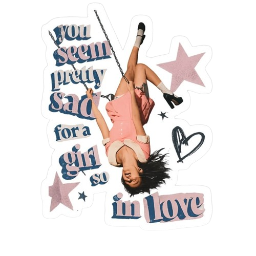
you seem pretty sad for a girl so in love
GUTS World Tour: sua passagem pelo Brasil
É o terceiro álbum de estúdio de Olivia Rodrigo, lançado em 12 de junho de 2026. Produzido principalmente por Daniel Nigro, duas vezes vencedor da categoria Producer of the year no Grammys. O projeto é dividido em duas partes: “girl so in love” e “you seem pretty sad”, criando um contraste entre o lado mais apaixonado e o lado mais melancólico de um relacionamento.
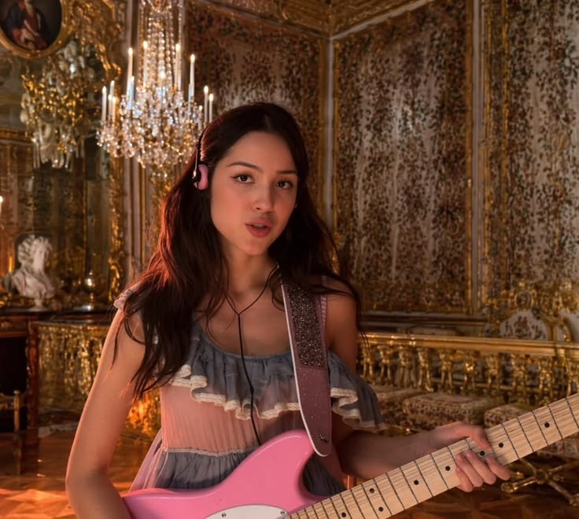
Lançada em 17 de abril de 2026 e com direito a estreia no 1º lugar do Spotify global, drop dead foi o primeiro single e abriu oficialmente a divulgação da nova era. A música chegou ao topo das rádios Pop dos Estados Unidos e fala sobre a intensidade de uma paixão, aquela sensação de ficar completamente obcecada por alguém.
| O álbum estreou em 1º lugar na Billboard 200, com 485 mil unidades vendidas na primeira semana. | O álbum registrou 218,4 milhões de streams, no Spotify, apenas na primeira semana de lançamento. | Estreou seu primeiro dia com 81,5 milhões de streams na plataforma. | Esgotou todos os ingressos das 86 datas anunciadas com a 'The Unreaveled Tour'. | Até o momento, já completou 12 semanas no topo do chart de álbuns mais ouvidos semanalmente, também no Spotify. | Aclamado por diversos veículos de comunicação, também recebeu o título de 'Best New Music' da revista Pitchfork |
"Escrevi e gravei 'you seem pretty sad for a girl so in love' ao longo de dois anos. É a história cronológica de um romance, do início ao fim. De 'drop dead' a 'cigarette smoke', é a jornada do meu primeiro relacionamento adulto, desde toda a empolgação e possibilidades do início até o lento desmoronamento e, por fim, o coração partido que veio com ele.
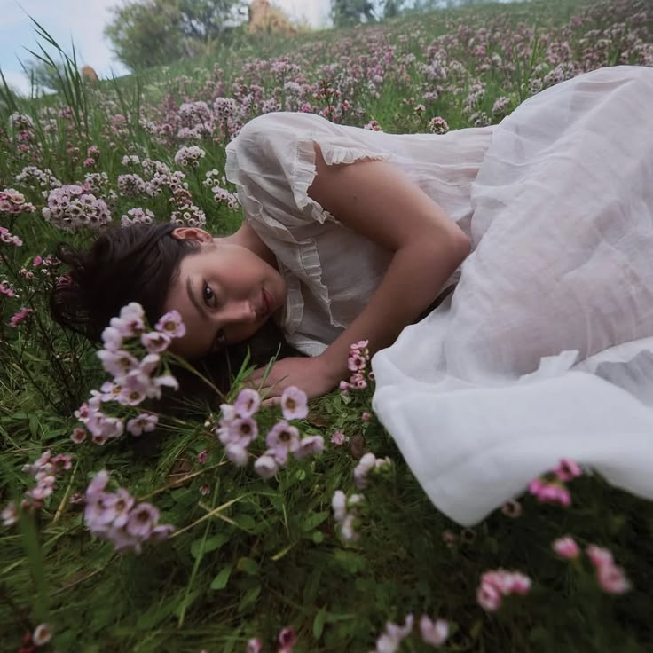
Enquanto fazia o álbum, fiquei pensando em como, em um relacionamento, tanto a alegria quanto a melancolia podem coexistir lado a lado. Foi catártico para mim, como compositora, explorar alguns dos sentimentos menos óbvios que vêm com o apaixonar-se. Tive que reviver toda a ansiedade, o anseio, o ciúme, a tristeza, e acabei percebendo que se apaixonar pode genuinamente fazer você sentir que está enlouquecendo.
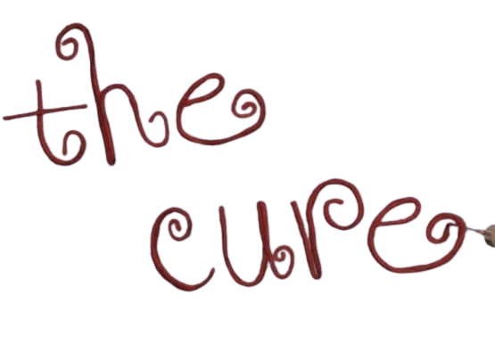
A peça central do álbum, e a minha música favorita que já escrevi, é 'the cure'. Eu a escrevi sobre a constatação sóbria de que estar em um relacionamento não iria consertar a mim ou as minhas inseguranças da maneira que eu esperava..."
Foi o segundo single da era. Com quase cinco minutos de duração, a música se destaca por sua construção gradual: começa de forma mais contida, com violão e vocais sobrepostos, e cresce até um clímax marcado por bateria, piano e cordas orquestrais. A faixa foi recebida com grande destaque pela crítica adquirindo o selo Best New Track. A faixa também serve como um ponto de virada dentro do disco, marcando a transição entre suas duas metades.
Estreou em 5º lugar na Billboard Hot 100, tornando-se a segunda música a entrar no Top 5 durante a era do álbum. No Reino Unido, a música alcançou o 2º lugar na Official Singles Chart e permaneceu 17 semanas no Top 10. Ela também chegou ao 1º lugar no Apple Music Brasil e entrou em outras paradas de diversos países.
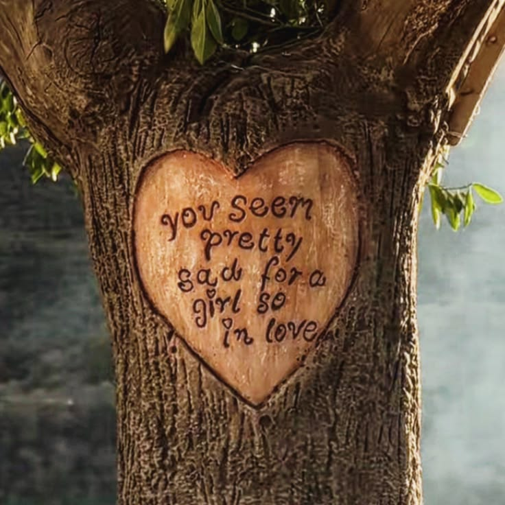
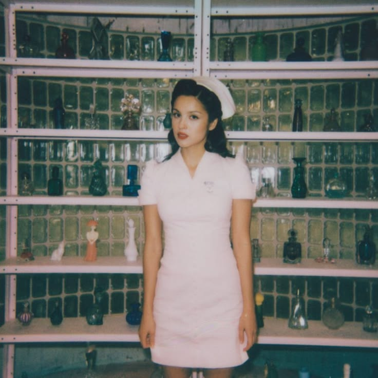
O vídeoclipe da música foi desenvolvido sem o uso de Inteligência artificial e se passa em um hospital cenográfico, que acompanha a construção do instrumental e termina transformando o ambiente ao seu redor. O visual mistura cenários de papelão, objetos feitos à mão e uma estética inspirada em filmes antigos.
Em 28 de março de 2025, Olivia Rodrigo chegou ao Brasil como uma das headliners do Lollapalooza. O show trouxe músicas de SOUR e GUTS spilled, com momentos de muita chuva e gente passando mal na grade. Foi uma experiência que eu não queria deixar de registrar aqui.
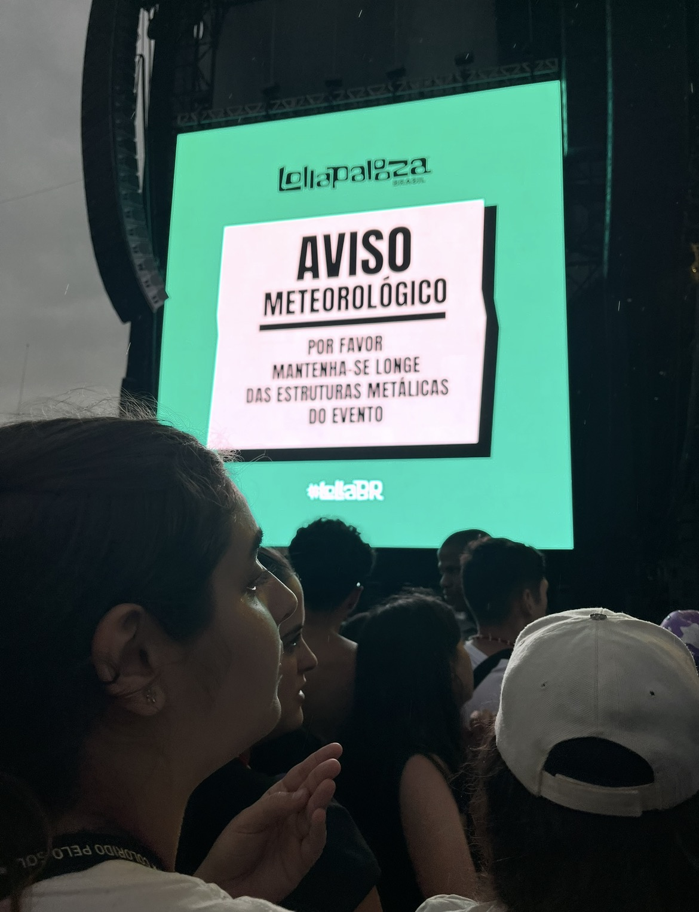
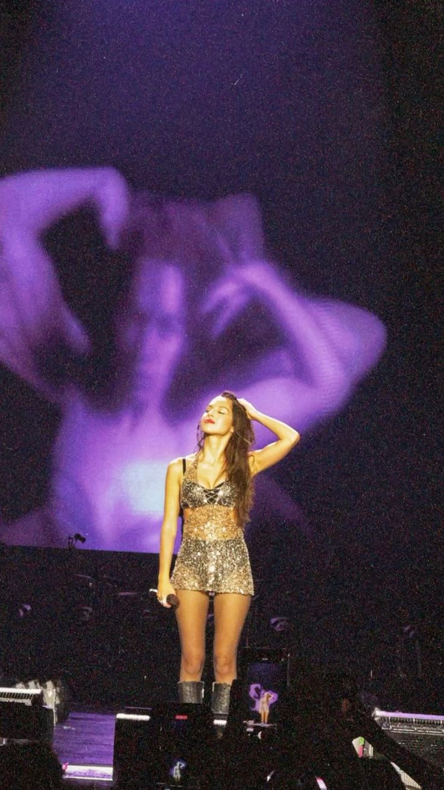
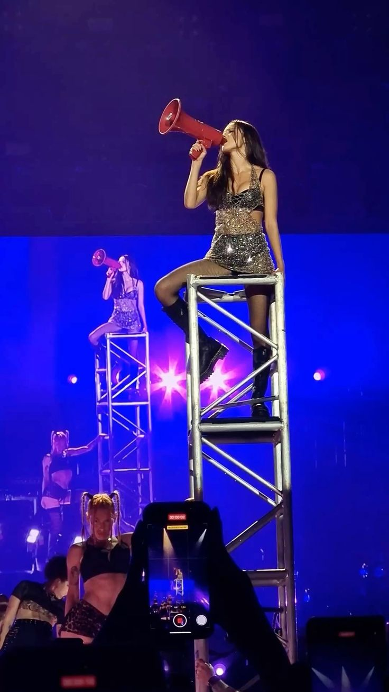
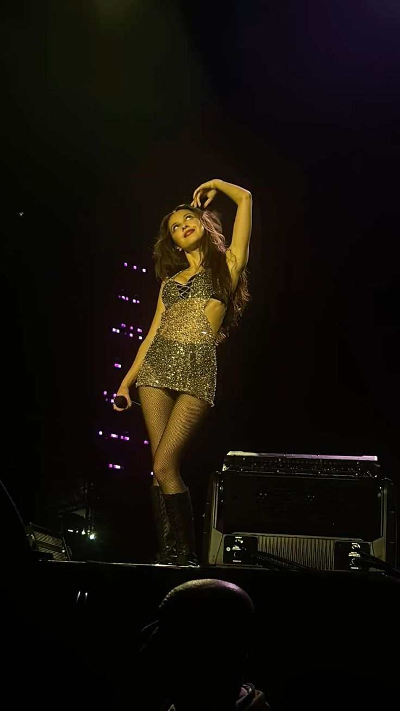
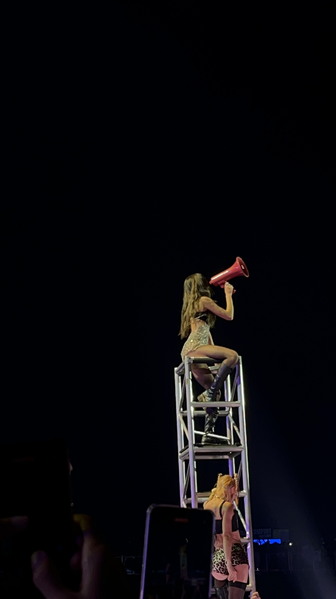
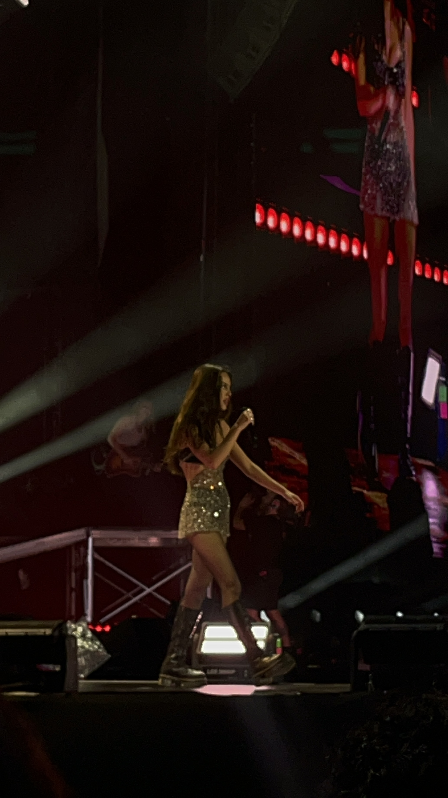
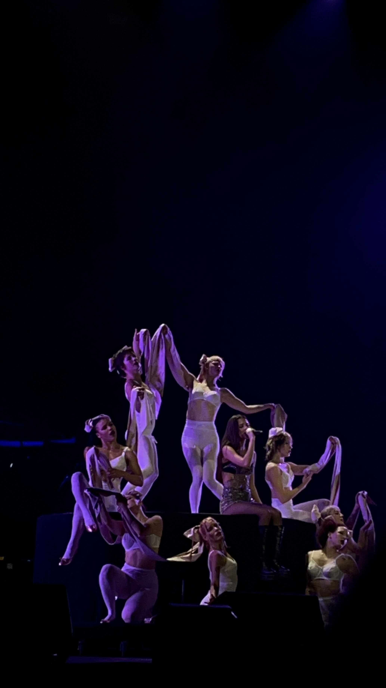
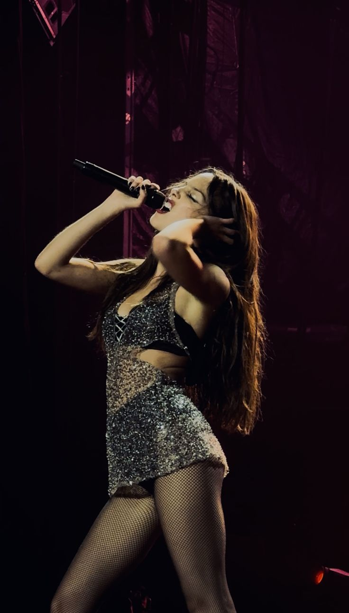